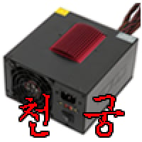

40 · 25 · 17 분 전 · 원문
베이비 퀸이란 중국발 AI 걸그룹.
멤버 하나가 임신을 사유로 하차함 ㅋㅋㅋㅋㅋㅋㅋㅋㅋㅋㅋㅋㅋ
수집 당시 댓글 25개
끼룰렝 · 4 시간 전
↳ 답글 · 블랙곰돌디자인 · 15 분 전
멤버 하나가 이름으로 "임신해서 하차한다"는 글을 올렸나봄 ㅋ 4명을 AI로 돌리기 힘들었나봄
이미사용중인닉 · 4 시간 전
넷이 구분 안 가게 똑같이 생김
↳ 답글 · 익명
최신 중국 트렌드인갑죠 ㅋ
끼룩꺄룩 · 4 시간 전
? 무슨 소리야 이게
말 그대로 멤버중 하나를 임신했다는 스토리로 하차시킴. 아마 4명 다 AI 돌리기 빡셌나봄
↳ 답글 · 끼룩꺄룩 · 3 시간 전
원 별 ㅋㅋㅋㅋㅋㅋㅋㅋㅋㅋㅋㅋㅋㅋㅋㅋㅋㅋㅋㅋㅋㅋㅋㅋㅋ 개웃기네
↳ 답글 · 름벵 · 50 분 전
어쩐지 ai인데 뭔소린가했네 ㅋㅋㅋ
서울의움직이는노인정 · 4 시간 전
? 프로그래머가 임신함?
이바토해ㄹㅇㅇㅇ · 4 시간 전
넷다 똑같이 생걋는데;
캄보디아굳이오지마 · 3 시간 전
율희했네
닉으로드립치고싶냐 · 3 시간 전
빨리 부푸는 컴퓨터 부품좀
↳ 답글 · 띄어쓰기 · 19 분 전
천궁
↳ 답글 · 닉으로드립치고싶냐 · 16 분 전

↳ 답글 · 정중한싸대기 · 13 분 전
더운날 · 19 분 전
뱀고기 · 19 분 전
아기 만들기 여왕ㅋㅋㅋㅋ
서프라이즈마더풔커 · 18 분 전
조조: 더 꼴려졌구나!
↳ 답글 · 마자요 · 16 분 전
쬬
경변임네닉 · 18 분 전
우정잉 · 10 분 전
얼굴 찍어냈나
올그떠사냥꾼 · 7 분 전
이제 걸그룹 출신 av배우로 ai 돌리면 딱이겠네
110110110 · 6 분 전
램에다가 자지라도 박았나?
루리웹 · 3 분 전
넷 다 돌리기엔 메모리가 부족했나보다
댓글
수집 당시 댓글 25개
끼룰렝 · 4 시간 전
· 블랙곰돌디자인 · 15 분 전
멤버 하나가 이름으로 "임신해서 하차한다"는 글을 올렸나봄 ㅋ 4명을 AI로 돌리기 힘들었나봄
이미사용중인닉 · 4 시간 전
넷이 구분 안 가게 똑같이 생김
· 익명
최신 중국 트렌드인갑죠 ㅋ
끼룩꺄룩 · 4 시간 전
? 무슨 소리야 이게
· 익명
말 그대로 멤버중 하나를 임신했다는 스토리로 하차시킴. 아마 4명 다 AI 돌리기 빡셌나봄
· 끼룩꺄룩 · 3 시간 전
원 별 ㅋㅋㅋㅋㅋㅋㅋㅋㅋㅋㅋㅋㅋㅋㅋㅋㅋㅋㅋㅋㅋㅋㅋㅋㅋ 개웃기네
· 름벵 · 50 분 전
어쩐지 ai인데 뭔소린가했네 ㅋㅋㅋ
서울의움직이는노인정 · 4 시간 전
? 프로그래머가 임신함?
· 익명
멤버 하나가 이름으로 "임신해서 하차한다"는 글을 올렸나봄 ㅋ 4명을 AI로 돌리기 힘들었나봄
이바토해ㄹㅇㅇㅇ · 4 시간 전
넷다 똑같이 생걋는데;
캄보디아굳이오지마 · 3 시간 전
율희했네
닉으로드립치고싶냐 · 3 시간 전
빨리 부푸는 컴퓨터 부품좀
· 띄어쓰기 · 19 분 전
천궁
· 닉으로드립치고싶냐 · 16 분 전

· 정중한싸대기 · 13 분 전
더운날 · 19 분 전
멤버 하나가 이름으로 "임신해서 하차한다"는 글을 올렸나봄 ㅋ 4명을 AI로 돌리기 힘들었나봄
뱀고기 · 19 분 전
아기 만들기 여왕ㅋㅋㅋㅋ
서프라이즈마더풔커 · 18 분 전
조조: 더 꼴려졌구나!
· 마자요 · 16 분 전
쬬
경변임네닉 · 18 분 전
멤버 하나가 이름으로 "임신해서 하차한다"는 글을 올렸나봄 ㅋ 4명을 AI로 돌리기 힘들었나봄
우정잉 · 10 분 전
얼굴 찍어냈나
올그떠사냥꾼 · 7 분 전
이제 걸그룹 출신 av배우로 ai 돌리면 딱이겠네
110110110 · 6 분 전
램에다가 자지라도 박았나?
루리웹 · 3 분 전
넷 다 돌리기엔 메모리가 부족했나보다